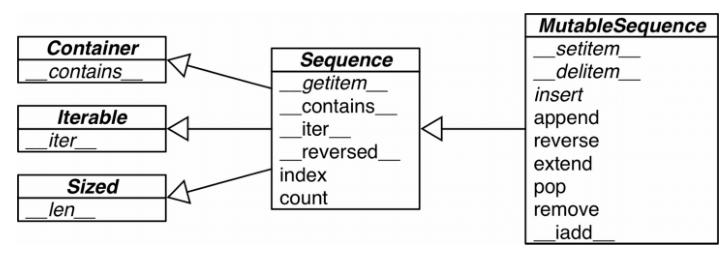

Python 数据模型
一摞Python风格的纸牌
类中的函数称为方法，特殊方法，也叫魔术方法,与其他方法的差别在于调用方法的方式。比如
__init__(),每次根据类创建实例时，Python都会自动运行它。在这个方法的定义中，形参 self 必不可少，还必须位于其他形参的前面。当 Python调用这个方法来创建一个实例时，将自动传入实参 self 。每个与类相关联的方法调用都自动传递实参 self ，它是一个指向实例本身的引用，让实例能够访问类中的属性和方法。
1 |
|
collections.namedtuple 构建了一个名为 Card,只具有属性 rank 和 suit 的类。
__len__和__getitem__的具体实现可以代理给 self._cards这个 Python 列表（即 list 对象）。
如何使用特殊方法
- 特殊方法是为了被 Python 解释器调用的，所以没有
my_object.__len__()这种写法，而是len(my_object)。 - 如果不是自定义对象，而是 Python 内置类型，比如 list、str 等，Python 会直接调用一种内置的 ob_size 属性。
- 通过内置的函数（len、iter、str 等）来构造特殊方法最好。因为对于内置的类来说，速度更快。
1 |
|
Python 有一个内置的函数叫 repr，它能把一个对象用字符串的形式表达出来以便辨认，这就是“字符串表示形式”。repr 就是通过
__repr__这个特殊方法来得到一个对象的字符串表示形式的。如果没有实现__repr__，当我们在控制台里打印一个向量的实例时，得到的字符串可能会是<Vector object at 0x10e100070>。
特殊方法一览
跟运算符无关的特殊方法：
| 类别 | 方法名 |
|---|---|
| 字符串/字节序列表示形式 | __repr__ 、 __str__ 、 __format__ 、 __bytes__ |
| 数值转换 | __abs__ 、 __bool__ 、 __complex__ 、 __int__ 、 __float__ 、 __hash__ 、 __index__ |
| 集合模拟 | __len__ 、 __getitem__ 、 __setitem__ 、 __delitem__ 、 __contains__ |
| 迭代枚举 | __iter__ 、 __reversed__ 、 __next__ |
| 可调用模拟 | __call__ |
| 上下文管理 | __enter__ 、 __exit__ |
| 实例创建和销毁 | __new__ 、 __init__ 、 __del__ |
| 属性管理 | __getattr__ 、 __getattribute__ 、 __setattr__ 、 __delattr__ 、 __dir__ |
| 属性描述符 | __get__ 、 __set__ 、 __delete__ |
| 跟类相关的服务 | __prepare__ 、 __instancecheck__ 、 __subclasscheck__ |
跟运算符相关的特殊方法：
| 类别 | 方法名和对应的运算符 |
|---|---|
| 一元运算符 | __neg__ - 、 __pos__ + 、 __abs__ abs() |
| 众多比较运算符 | __lt__ < 、 __le__ <= 、 __eq__ == 、 __ne__ != 、 __gt__ > 、 __ge__ >= |
| 算术运算符 | __add__ + 、 __sub__ - 、 __mul__ * 、 __truediv__ / 、 __floordiv__ // 、 __mod__ % 、 __divmod__ divmod() 、 __pow__ ** 或 pow() 、 __round__ round() |
| 反向算术运算符 | __radd__ 、 __rsub__ 、 __rmul__ 、 __rtruediv__ 、 __rfloordiv__ 、 __rmod__ 、 __rdivmod__ 、 __rpow__ |
| 增量赋值算术运算符 | __iadd__ 、 __isub__ 、 __imul__ 、 __itruediv__ 、 __ifloordiv__ 、 __imod__ 、 __ipow__ |
| 位运算符 | __invert__ ~ 、 __lshift__ << 、 __rshift__ >> 、 __and__ & 、 __or__ |
| 反向位运算符 | __rlshift__ 、 __rrshift__ 、 __rand__ 、 __rxor__ 、 __ror__ |
| 增量赋值位算术运算符 | __ilshift__ 、 __irshift__ 、 __iand__ 、 __ixor__ 、 __ior__ |
序列构成的数组
内置序列类型概览
- 容器序列：list、tuple 和 collections.deque 这些序列能存放不同类型的数据
- 扁平序列：str、bytes、bytearray、memoryview 和 array.array，这类序列只能容纳一种类型
- 可变序列：list、bytearray、array.array、collections.deque、memoryview
- 不可变序列：tuple、str 和 bytes
可变序列（MutableSequence）和不可变序列（Sequence）
列表推导和生成器表达式
虽然也可以用列表推导来初始化元组、数组或其他序列类型，但是生成器表达式是更好的选择。这是因为生成器表达式背后遵守了迭代器协议，可以逐个地产出元素，而不是先建立一个完整的列表，然后再把这个列表传递到某个构造函数里。前面那种方式显然能够节省内存。
1 | # 字符串变成 Unicode 码位 |
表达式内部的变量和赋值只在局部起作用，表达式的上下文里的同名变量还可以被正常引用。